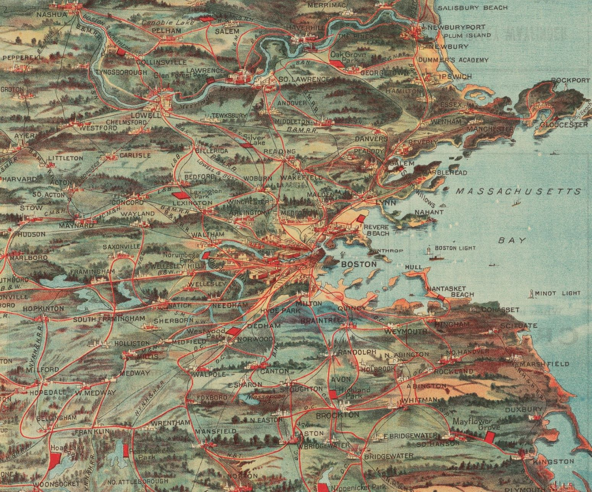

Geo. H. Walker & Co, “Birds Eye View of Trolley Routes in New England” (Boston: New England Street Railway Club, 1904), 52 x 36 cm, Harvard Map Collection, Harvard University.
Jun 2019–Aug 2019
Full Text at Harvard Library
As an intern in Digital Strategies and Innovation at Harvard Library, I led a project to develop a new tool for accessing the uncorrected plain text of digitized items in Harvard University’s brand new open digital archive, Harvard Digital Collections. Before, users could not view all the plain text of a multi-page item in one place. We created a new page that loads all the plain text segments in one place using JavaScript and allows the user to download a plain text file.
We developed this tool with the goal of improving the accessibility of Harvard Digital Collections. Users of assistive technology as well as anyone who wants the full plain text will be able to access it in one place. The text is not yet corrected or marked up, so it is not fully accessible, but the first step was getting it all in one place.